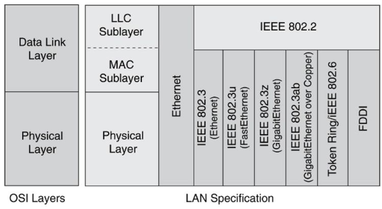
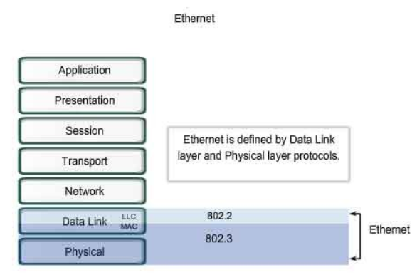
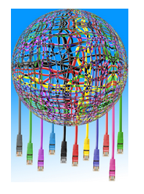

Según el Diccionario de la Lengua Española, sistema, en una de sus acepciones, es el conjunto de reglas o principios sobre una materia racionalmente enlazados entre sí. En este mismo diccionario podemos buscar la palabra comunicación, y encontramos que se puede definir como transmisión de señales mediante un código común al emisor y al receptor.
Por tanto, podemos definir sistema de comunicación como un conjunto de elementos que, siguiendo unas reglas, intervienen en la transmisión de señales, permitiendo el intercambio de información entre un emisor y un receptor.
De esta definición podemos inferir los componentes de un sistema de comunicación, que serán:
Emisor: elemento que transmite la información.
Receptor: elemento que recibe la información.
Canal: medio por el cual se transmite la información, utilizando señales convenientemente codificadas.
Como podemos deducir, es necesario que emisor y receptor codifiquen la información de forma que ambos se entiendan, por tanto necesitan crear un conjunto de reglas que regulen la comunicación entre ambos, este conjunto de reglas es lo que conocemos por protocolo de comunicación.
Considerando que la transferencia de la información entre emisor y receptor se lleva a cabo a través del canal de comunicaciones, podemos definir este último como el medio físico por el cual se transporta la información convenientemente codificada, siguiendo unos protocolos establecidos.
Así podemos clasificar los sistemas de comunicación según diferentes puntos de vista. Si tenemos en cuenta el medio de transmisión, podemos tener sistemas en línea o cableados y sistemas inálambricos.
En cambio, si el criterio que utilizamos es la direccionalidad de la transmisión, los sistemas de comunicación pueden clasificarse en:
Simplex: Cuando la comunicación se efectúa en un sólo sentido. Emisor emite, receptor recibe. Ejemplo: Cuando escuchamos música por la radio, nosotros sólo recibimos.

Semidúplex (half duplex): Cuando la comunicación se realiza en los dos sentidos, pero no de forma simultánea. Emisor emite, receptor recibe, receptor pasa a ser emisor, y emisor pasa a ser receptor. Ejemplo: Hablar por el walkie-talkie.

Dúplex (full duplex): Cuando la comunicación se realiza en ambos sentidos de forma simultánea. Ambos son emisores y receptores a la vez. Ejemplo: Las redes de ordenadores suelen funcionar de esta forma.
